PERSONAJES
Daenerys Targaryen
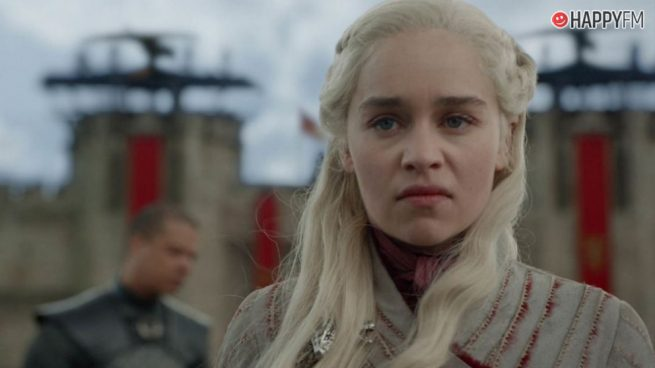
Daenerys fue la única hija del rey Aerys II Targaryen y de su hermana-esposa, la reina Rhaella. Tras la muerte de su padre y de su hermano mayor en la Guerra del Usurpador, viajó con su otro hermano, Viserys y su madre quien murió dando a luz a la pequeña Daenerys. De esa manera, su hermano mayor Viserys quedó como legítimo rey Targaryen al Trono de Hierro y ella como su heredera.

Jon Nieve
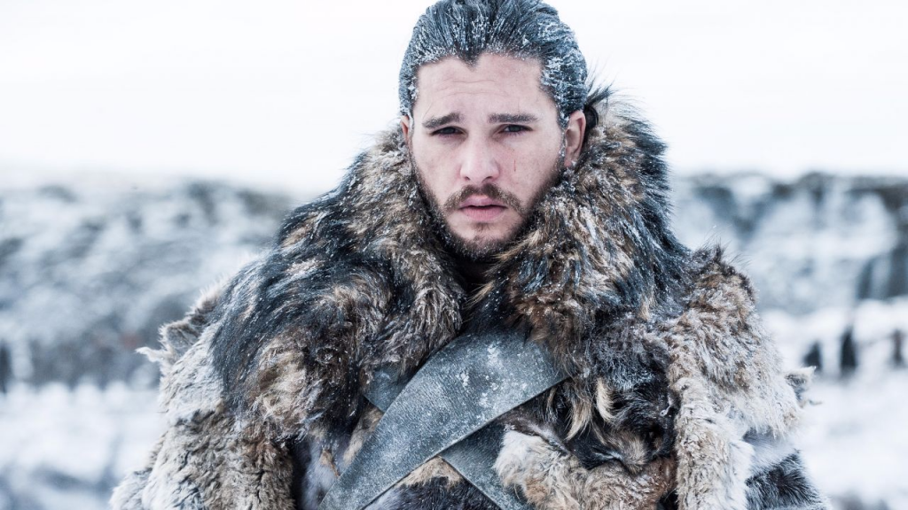
Cersei Lannister
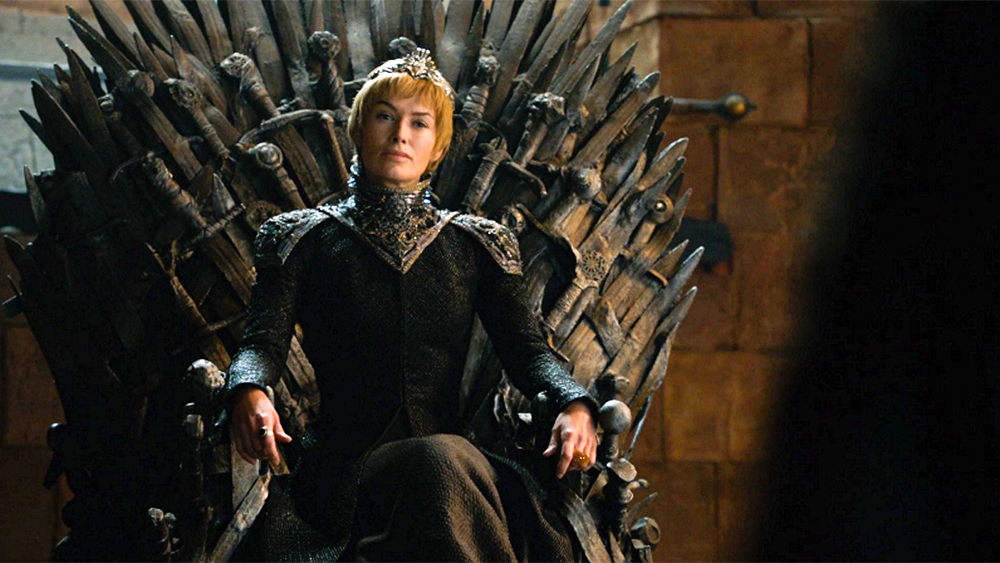
La reina Cersei Lannister es la hija mayor de Lord Tywin Lannister y Lady Joanna Lannister. Tiene dos hermanos, su mellizo Jaime y su hermano menor Tyrion. Tras la Guerra del Usurpador se casó con el nuevo rey, Robert Baratheon, y se convirtió en Reina de los Siete Reinos. Es madre de tres hijos, Joffrey, Myrcella y Tommen, todos fruto de su secreta relación incestuosa con su hermano Jaime.

Tyrion Lannister
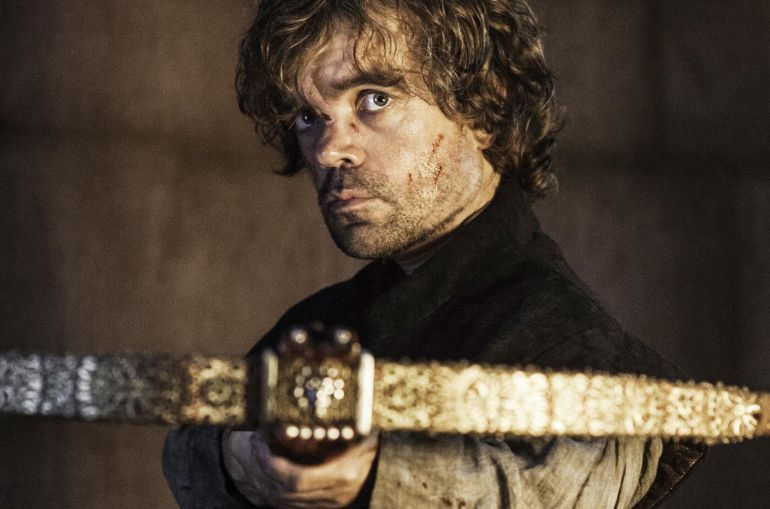
Tyrion Lannister es el tercer hijo de Lord Tywin Lannister y Lady Joanna Lannister, y hermano menor de los mellizos Cersei y Jaime. Es apodado el Gnomo y Mediohombre debido a su enanismo.
Arya Stark
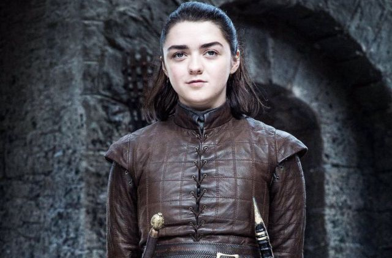
Arya Stark es la segunda hija de Lord Eddard Stark y Lady Catelyn Tully. Tiene una hermana, Sansa; tres hermanos, Robb, Brandon y Rickon, y un medio-hermano bastardo, Jon Nieve, al que aprecia mucho. Como algunos de sus hermanos, ella es una cambiapieles, pudiendo entrar en la piel de su loba huargo, Nymeria.
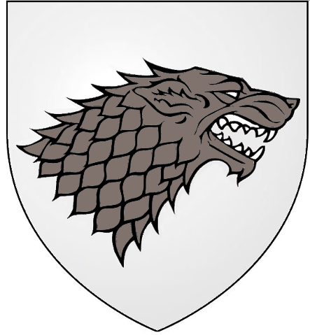
Rey de la Noche
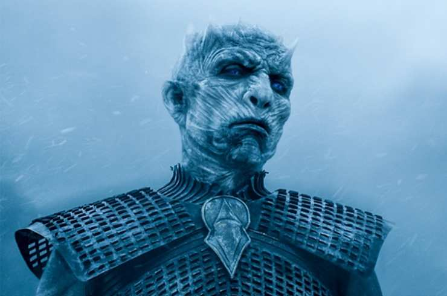
El Rey de la Noche es el líder de los Caminantes Blancos. Los Hijos del Bosque crearon a los Caminantes Blancos para defender Poniente de los Primeros Hombres, quienes estaban cortando sus árboles sagrados y matando a los Hijos del Bosque. Sin embargo, los Caminantes Blancos se volvieron contra sus creadores y comenzaron lo que se conoció como la Larga Noche.
TEMPORADAS
1º TEMPORADA
La historia toma lugar en el continente de Poniente, conocido como Essos. La Casa Stark, encabezada por Lord Eddard Stark, se ve atrapada en una tormenta de conspiraciones que rodean al Rey Robert Baratheon y la misteriosa muerte de la anterior Mano del Rey, Jon Arryn.
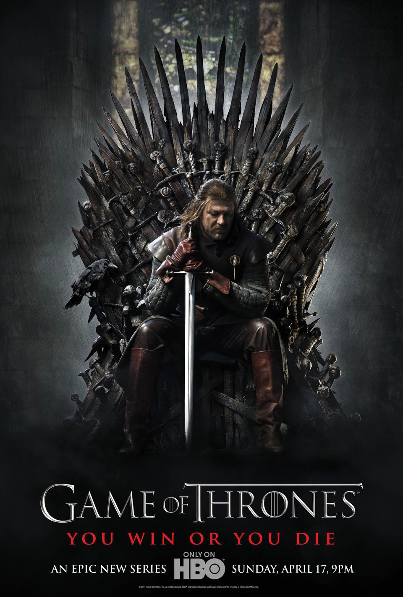
2º TEMPORADA
Los Siete Reinos están en guerra con el Rey en el Norte, Robb Stark, luchando por ganar la independencia de su pueblo. En Essos, Daenerys y su pequeño grupo de seguidores deben encontrar nuevos aliados para apoyar su reclamación al Trono de Hierro.
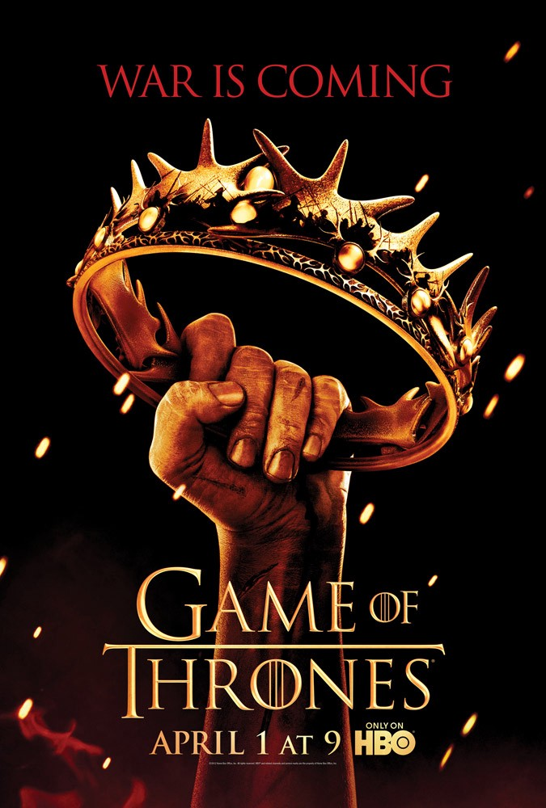
3º TEMPORADA
Tras la muerte de Renly Baratheon , los cuatro reyes de Westeros creen tener una reclamación al Trono de Hierro. Robb Stark, busca venganza por la muerte de su padre Eddard Stark. En el lejano este, Daenerys continua con su misión: volver a los Siete Reinos para reconquistarlos.
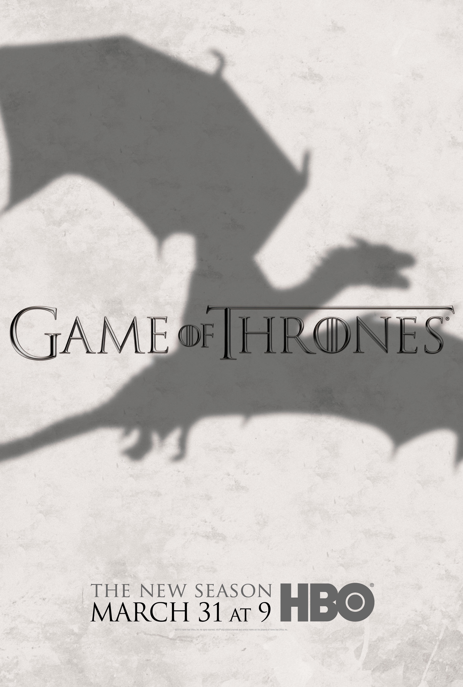
4º TEMPORADA
Después de la muerte de Robb Stark en la boda roja, los tres reyes restantes de Poniente creen tener una demanda al trono de hierro. Mientras tanto, en el muro Jon Nieve y los de la guardia de la noche se preparan para la batalla contra los salvajes..
5º TEMPORADA
En el Muro, el recién elegido Lord Comandante de la Guardia de la noche, Jon Nieve forma una alianza con los salvajes de evacuar a los otros salvajes que esta más allá de muro. Sansa Stark es comprometida a matrimonio con Ramsay Bolton para formar una alianza entre el Valle y los Bolton.
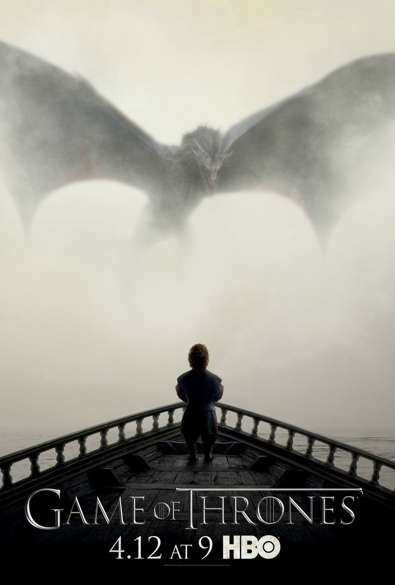
6º TEMPORADA
Tras su escape de Invernalia, Sansa Stark viaja al Muro con Brienne de Tarth para reencontrarse con su hermano Jon Nieve que fue asesinado por los de la Guardia de la noche pero será revivido gracias a Melisandre. Bran Stark entrena con el Cuervo de Tres Ojos.
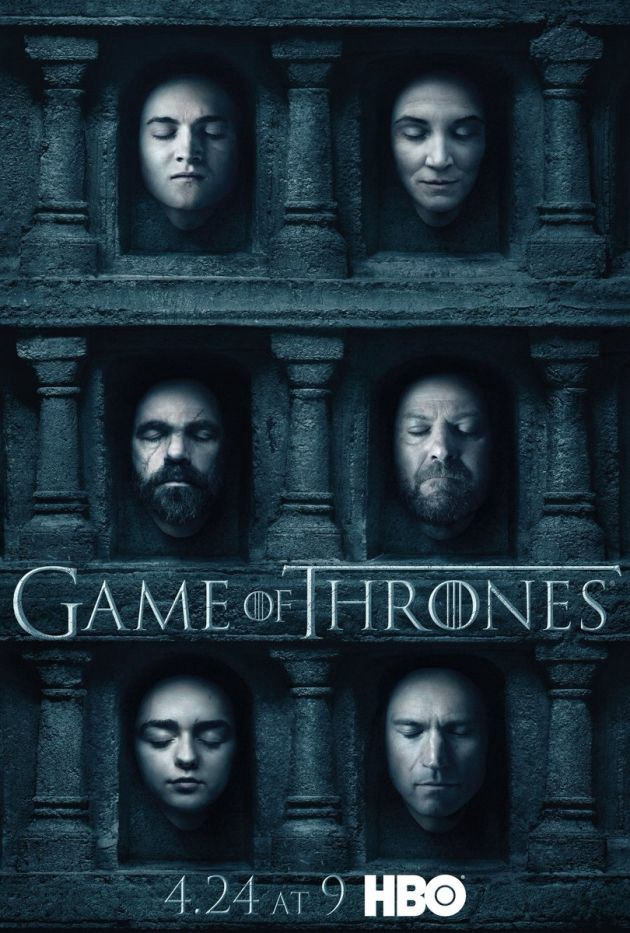
7º TEMPORADA
Daenerys Targaryen llega a Westeros con su ejército y tres dragones y libra una guerra contra los Lannister, Jon Snow forja una alianza con Daenerys en un intento de unir su fuerzas contra el ejército del Caminante Blanco, Arya y Bran regresan a Winterfell. El ejército de los muertos rompe el Muro.
8º TEMPORADA
Jon Nieve, Daenerys Targaryen y su ejército llegan a Invernalia donde descubren que los Caminantes Blancos han atravesado el Muro. En Desembarco del Rey, Cersei Lannister no está preocupada por el Muro, ya que Euron Greyjoy ha regresado con la Compañía Dorada.
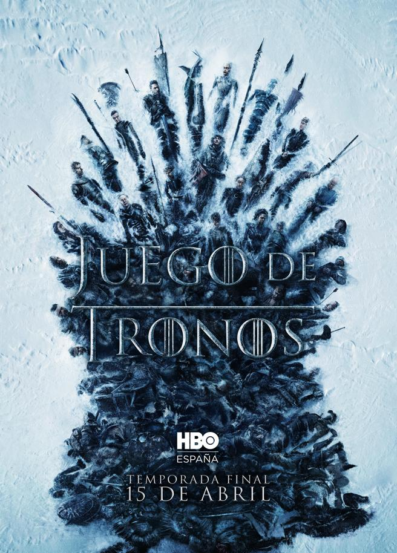
BATALLAS
Batalla del Aguasnegras
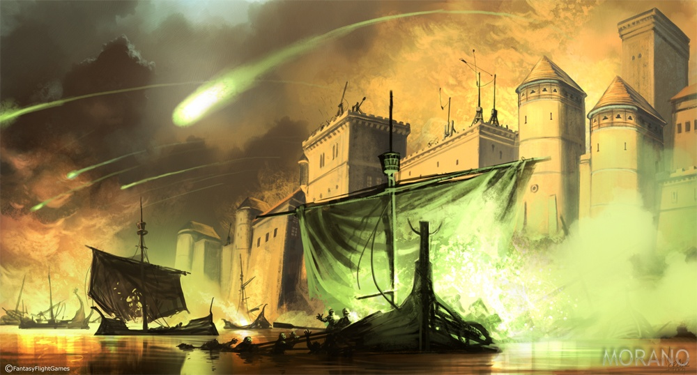
Saqueo de Astapor
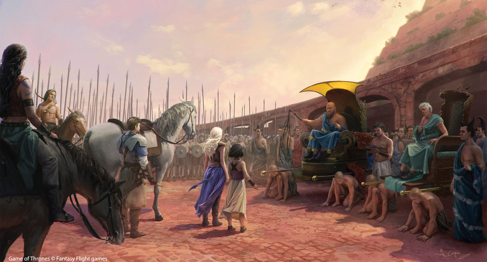
Batalla de Casa Austera
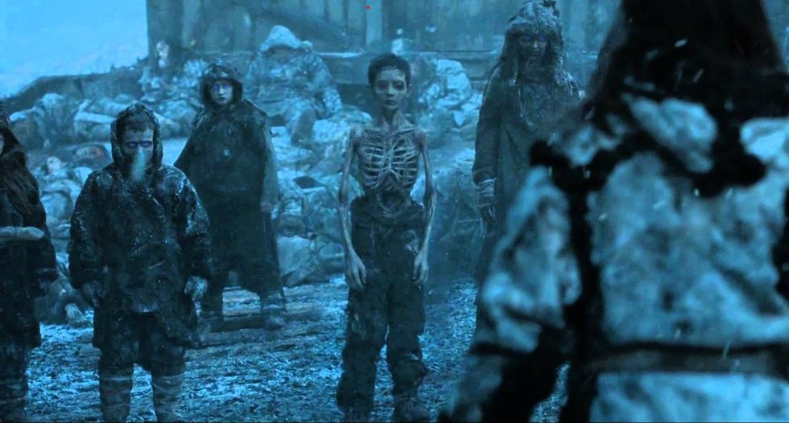
Batalla de los Bastardos
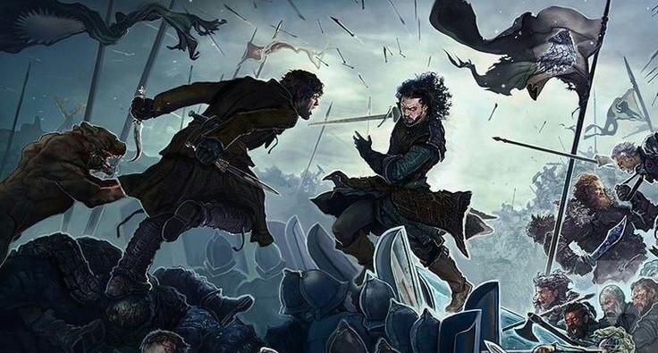